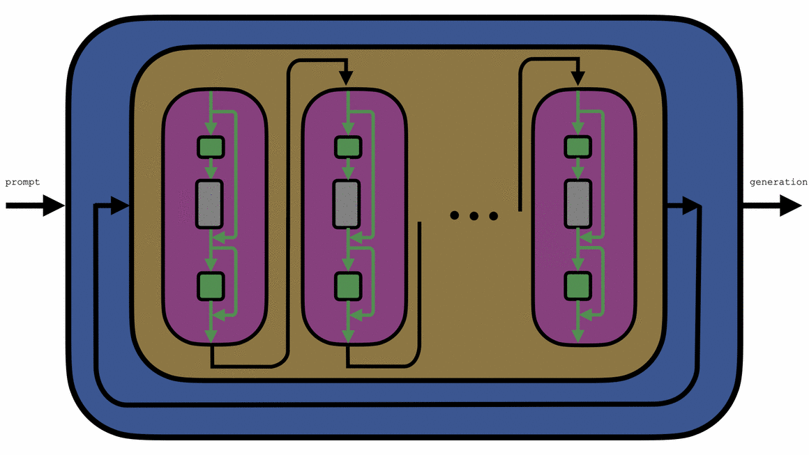
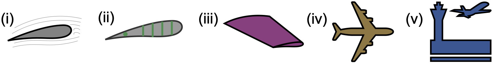

We study artificial intelligence through the lens of control theory: treating generative models as dynamical systems that can be understood, controlled, and ultimately improved with the same rigor and reliability we already have in other engineering disciplines. We believe this kind of rigor, not just empirical trial and error, is what will make AI systems truly reliable. In that spirit, below you will find how we think about the problem at every level of granularity, together with the papers that came out of it.
Imagine a system that has a property we can measure, and imagine that this property evolves with time: we call this a dynamical system. Many things can be studied as dynamical systems: a car (position and velocity), a robot (joint angles and velocities), the power network (voltage and frequency), the metabolic network (metabolite concentrations), and many more. In control theory, we are interested in understanding how to analyze and control the evolution of these systems so that they have desirable properties: the car does not crash, the voltage stays within limits, the robot reaches its desired position.
You have probably interacted with many dynamical systems today! But perhaps what you did not know is that AI systems are also dynamical systems. In the Control and Intelligent Systems Lab, we use control theory to study the dynamical systems underlying intelligent behavior in artificial systems. We believe this will enable better AI systems, and will expand the applicability of control techniques to a wide range of applications, from natural language processing to robotics. Below we tell you what our approach is to doing this!
As you are probably guessing, unveiling the dynamics of intelligence is not straightforward. Like many other engineering systems, AI systems exhibit complex and carefully curated architectures that are responsible for the behaviors that we observe. For this reason, we study the dynamical systems that arise at different levels of granularity while accounting for their role in the full AI system's architecture:

AI generative models interact with the world by being embedded in cyber or physical systems, which are themselves dynamical systems: robots, recommendation platforms, chatbots, etc. We can analyze and control how these systems interact with the world using tools from control theory!
See papers →Zooming in, an entire model's dynamics can also be studied as a closed-loop system. For instance, autoregressive loops or denoising steps can be seen as closed-loop dynamical processes.
See papers →Inside the deep architecture we find a sequence of stacked computing blocks, the layers. This can be treated as an unrolled dynamical system, where depth is seen as time. Treated as an input-output system agnostic to its internals, a stack of layers becomes a trajectory unfolding in time. Steering a model's activations during generation is then a control problem.
See papers →Inside each layer we find the mixer scaffold, a set of components such as normalization layers and skip connections. These components pre- and post-process the signal before and after the token mixer. By studying these components, we can gain important insights about their dynamics, both at inference and training time.
See papers →At the core of every architecture sits the block that mixes information across tokens: attention, the SSM recurrence, and their relatives are examples of this block. Studying how tokens evolve here clarifies what actually distinguishes one architecture from another, and what essential ingredients are needed to generate intelligent behavior.
See papers →Fun fact — Planes also have dynamical systems at different degrees of granularity: (i) the dynamics of an airfoil dictates lift, (ii) airfoils have structural components that provide stability and shape the airflow, (iii) stacking airfoils gives wings, which have complex aeroelastic dynamics, (iv) putting the wings, body, and tail together gives the dynamics of a plane, and (v) once in the sky, air traffic dynamics are also crucially controlled. All of these can be studied with tools from control theory!

Studying AI systems through the lens of dynamical systems holds great promise to achieve (a) principled design strategies, replacing today's trial-and-error approach (compute- and energy-intensive!), and (b) controllable AI architectures with guarantees, enabling the use of AI reliably in critical infrastructure. Classical control theory, however, does not directly translate to AI: most of its tools are not equipped to handle the sheer complexity, massive scale, sparse topologies, and local communication present in current AI systems. In the Control and Intelligent Systems Lab, we also extend control-theoretic tools to address these problems!
Large-scale dynamical systems are everywhere! The internet, the power network, a fleet of autonomous cars, or bacterial metabolism are all large-scale networks. One important feature of these systems (often overlooked, or seen as a burden) is that the different agents that compose these networks can only communicate locally to a few neighbors. In our work, we leverage this sparsity: by restricting each agent in the network to only communicate with a small neighborhood, we developed a new set of algorithms and theoretical results to optimally control distributed biological and cyber-physical systems for safety-critical applications: the Distributed and Localized Model Predictive Control (DLMPC) framework. In the Control and Intelligent Systems Lab, we extend this and other frameworks in the distributed setting to develop scalable control tools that are applicable to large-scale systems, including AI!
* denotes equal contribution